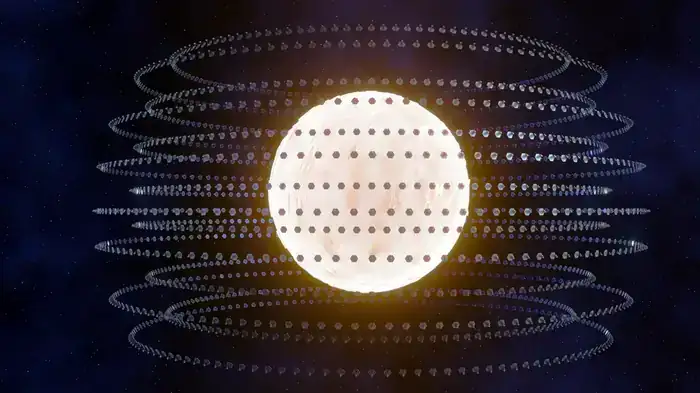
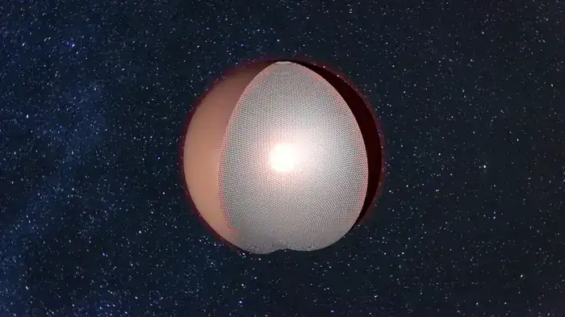
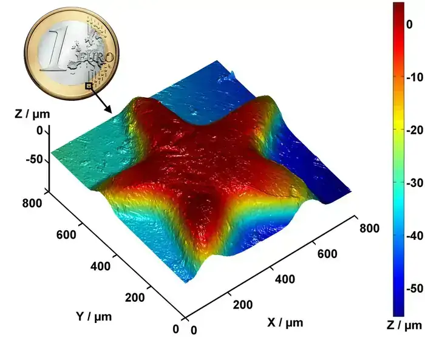

The idea
Robert Bradbury proposed the matrioshka brain in 1997: a computing substrate built as nested Dyson swarms, with the innermost running hot and each outer shell running on the waste heat of the one inside. The name is from the nested dolls. The point is efficiency — extract computation from every temperature gradient before the heat is finally radiated away.
Maps, diagrams and images






It belongs to a family of ideas about what a very advanced civilisation's computation would look like: Jupiter brains, black-hole power plants, Landauer-limited computers. The physics is not crankish; the energy budgets are calculated from ordinary thermodynamics.
Why it is fringe
Because nothing in the sky resembles one, and because the idea makes no prediction that distinguishes it from any other explanation of an absence. It is a well-formed thought experiment about what is possible, not a claim about what exists — and the archive files claims about what exists.
Documented: the thermodynamics — waste heat, Landauer limits, temperature gradients.
Documented: the family of megastructure concepts it belongs to.
Not observed: any object resembling one.
Not testable: as a claim about the universe, since absence is equally consistent with many explanations.
The honest label: fringe — a serious engineering thought experiment, with no evidence attached to it.
Why it is in the archive
Because the archive keeps the difference between 'possible' and 'evidenced' visible, and this is the cleanest example on the possible side of the line.
Open resources on this topic
- PapersOpen-access articles: DOAJ · PubMed Central · Internet Archive Scholar
- BooksPublic-domain and borrowable copies: Open Library · Project Gutenberg · Google Books · Internet Archive
Cite this page
Momin, S. (2026). Matrioshka Brains. The Larger World Archive. https://drsamonline.github.io/LARGE_GLOBE/matrioshka-brains.htmlMomin, Sohil. “Matrioshka Brains.” The Larger World Archive, 2026, https://drsamonline.github.io/LARGE_GLOBE/matrioshka-brains.html.Momin, Sohil. “Matrioshka Brains.” The Larger World Archive, 2026. https://drsamonline.github.io/LARGE_GLOBE/matrioshka-brains.html.@misc{matrioshka2026matrioshka,
author = {Momin, Sohil},
title = {Matrioshka Brains},
year = {2026},
howpublished = {The Larger World Archive},
url = {https://drsamonline.github.io/LARGE_GLOBE/matrioshka-brains.html},
note = {Last reviewed 20 November 2026}
}Last reviewed 20 November 2026 · Corrections policy · this page is not peer reviewed
Sources for this page
- Wikipedia, “Matrioshka brain” — the concept and its contexten.wikipedia.org
- Wikipedia, “Landauer's principle” — the thermodynamic floor on computationen.wikipedia.org
- Wikipedia, “Megastructure” — the family it belongs toen.wikipedia.org
- Wikipedia, “Computational limits” — what a computer of that size could doen.wikipedia.org